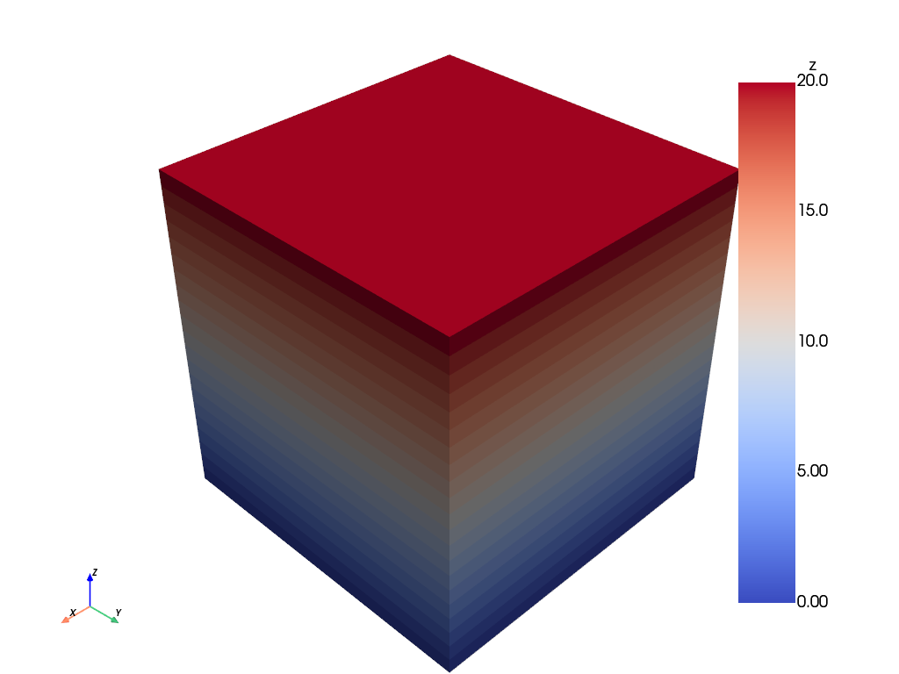
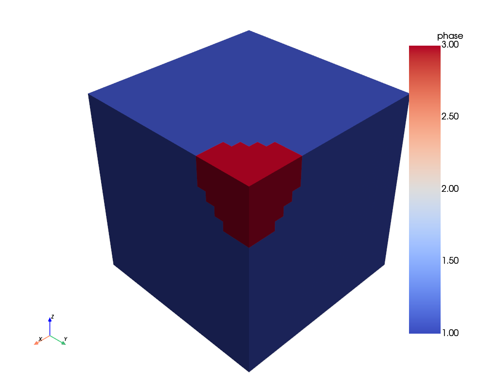
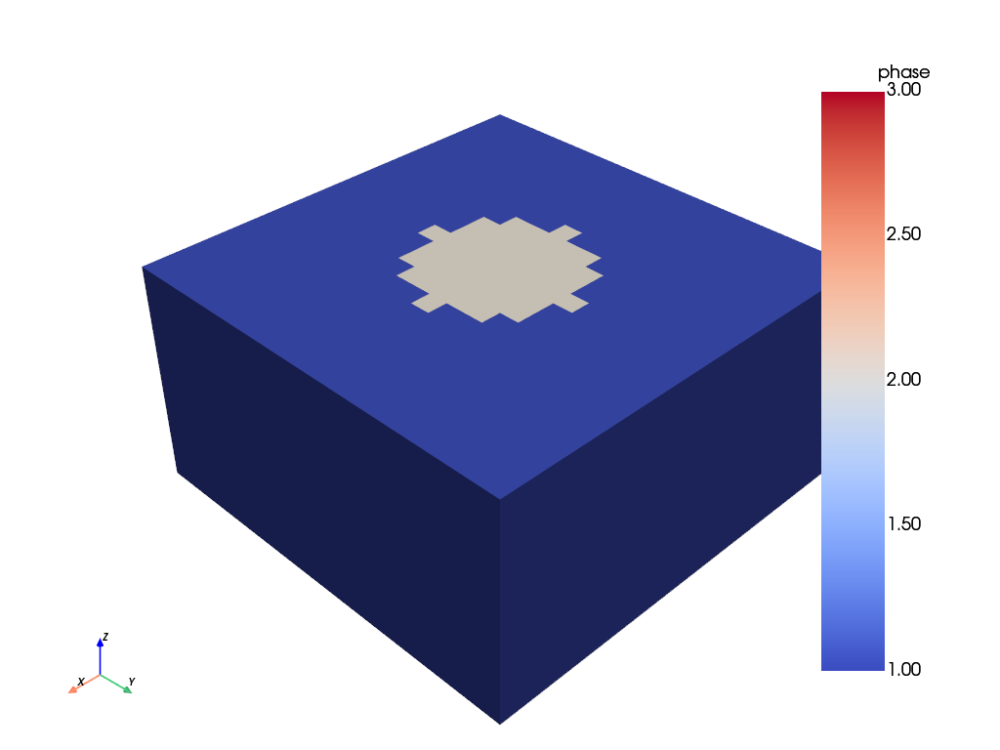
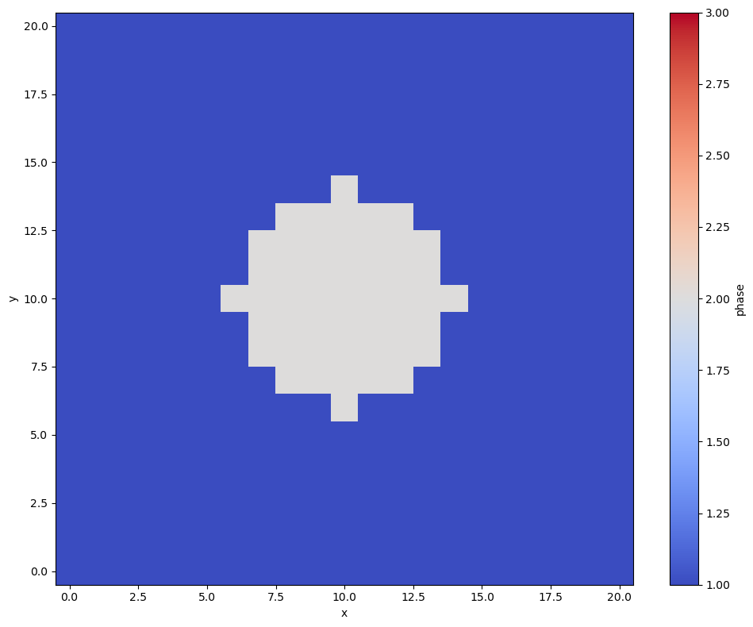
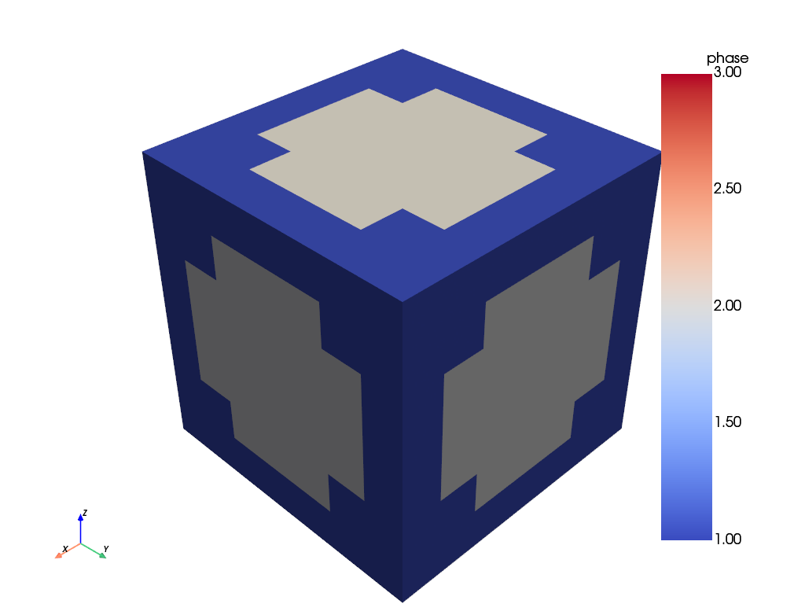
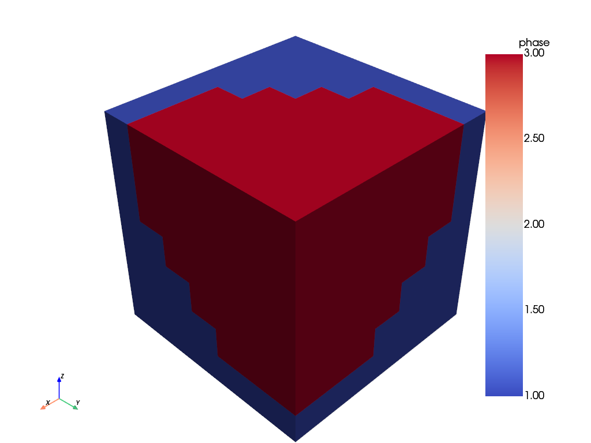
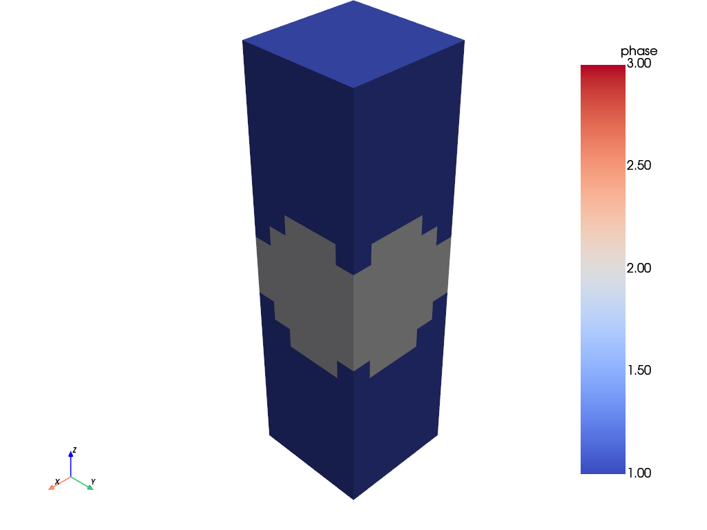
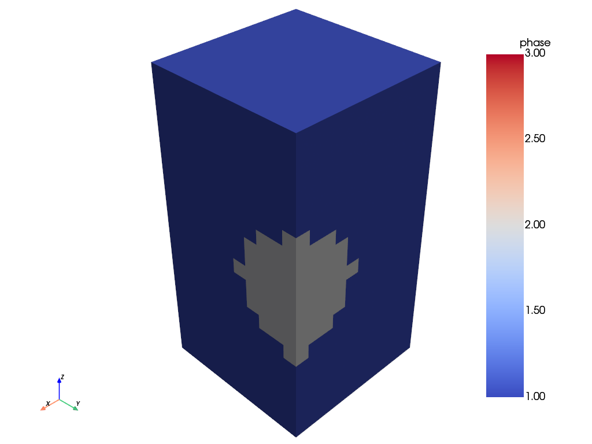
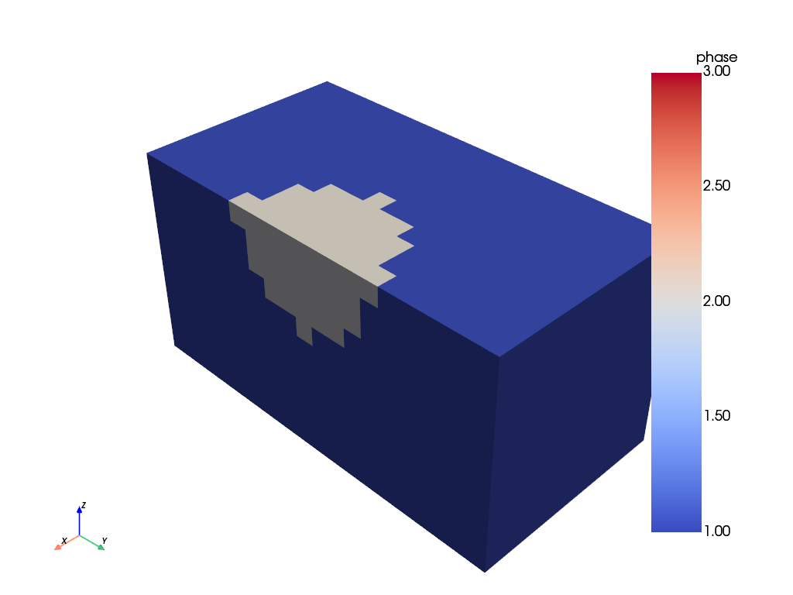

Cropping#
from materialite import Material, Crop, Sphere
A Material can be cropped in four ways: by physical coordinates (crop), by point IDs (crop_by_id), through index notation (a shorthand for crop_by_id), and via the Crop model class which provides higher-level operations. All crop operations return a new Material, leaving the original unchanged.
We work with a 21×21×21 material (spacing 1, so the physical domain is [0, 20] in each direction). Two spherical inclusions are embedded: one at the domain center (phase 2) and one towards the far corner (phase 3).
material = Material(dimensions=[21, 21, 21]).create_uniform_field("phase", 1)
sphere1 = Sphere(radius=4.0, centroid=material.center)
sphere2 = Sphere(radius=7.0, centroid=[21, 21, 21])
material = material.insert_feature(sphere1, fields={"phase": 2}).insert_feature(
sphere2, fields={"phase": 3}
)
print("Material Geometry")
print(f"dimensions: {material.dimensions}")
print(f"spacing: {material.spacing}")
print(f"origin: {material.origin}")
print(f"sizes: {material.sizes}")
print(f"center: {material.center}")
print(f"center_id: {material.center_id}")
Material Geometry
dimensions: [21 21 21]
spacing: [1 1 1]
origin: [0 0 0]
sizes: [20 20 20]
center: [10. 10. 10.]
center_id: [10 10 10]
Plot the z coordinate to get a feel for the coordinate system before looking at the phase field.
material.plot("z")

material.plot("phase")

Cropping by physical coordinate
crop retains all points whose physical coordinate falls within the given range (inclusive at both endpoints). Unspecified axes are unconstrained.
The cut below keeps all points with \(z \leq\) center[2], revealing a cross-section through both spheres.
material.crop(z=(material.origin[2], material.center[2])).plot(
"phase", color_lims=(1, 3)
)

Cropping by point ID
crop_by_id retains all points whose point ID falls within the given range (inclusive at both endpoints). Point IDs run from 0 to dimensions - 1 in each direction. For this material, this produces the same cut as above.
material.crop_by_id(z=(0, material.center_id[2])).plot("phase", color_lims=(1, 3))
Indexing
A Material supports NumPy-style index notation as a shorthand for crop_by_id. Slices use Python’s exclusive-stop convention, so 0:11 selects IDs 0 through 10. The same z cut as above becomes material[:, :, 0:center_id[2]+1].
material[:, :, 0 : material.center_id[2] + 1].plot("phase", color_lims=(1, 3))
A single integer ID collapses that axis to a single plane. Here, a cross-section exactly at the sphere centers.
material[:, :, material.center_id[2]].plot("phase", color_lims=(1, 3))

(<Figure size 1000x800 with 2 Axes>, <Axes: xlabel='x', ylabel='y'>)
Advanced cropping with the Crop model
The Crop class provides helper methods for common higher-level cropping operations. Being a Model, it can be run via crop_model.run(material), called directly as crop_model(material), or composed with material.run. In the examples below we assign a name to the model before running it to make the intent clear.
from_slice_by_id
Extracts a single plane perpendicular to the given axis. The axis argument accepts an integer (0/1/2) or a label ('x'/'y'/'z'). This is equivalent to a single integer in index notation: from_slice_by_id(axis='z', index=10) gives the same result as material[:, :, 10].
slice_crop = Crop.from_slice_by_id(axis="z", index=material.center_id[2])
slice_crop.run(material).plot("phase", color_lims=(1, 3))
(<Figure size 1000x800 with 2 Axes>, <Axes: xlabel='x', ylabel='y'>)
from_box_by_id
Extracts a box of a given point count centered on a point ID. dimensions is a 3-element iterable [x_size, y_size, z_size]; a None element spans the full range for that axis. By default the center of the box is material.center_id.
# 7×7×7 box around the center sphere (sphere1, radius 4, at center_id = [10, 10, 10])
box_crop = Crop.from_box_by_id(dimensions=[7, 7, 7])
box_crop.run(material).plot("phase", color_lims=(1, 3))

# Custom centering to isolate the corner sphere (sphere2, radius 7, at [21, 21, 21])
box_crop2 = Crop.from_box_by_id(dimensions=[14, 14, 14], center_id=[21, 21, 21])
box_crop2.run(material).plot("phase", color_lims=(1, 3))

from_fraction
Retains a given fraction of the domain along each axis, provided as a 3-element iterable [x_fraction, y_fraction, z_fraction]. centered=True (default) takes the crop from the middle of the domain; centered=False anchors to the origin.
fraction_crop = Crop.from_fraction(fractions=[0.3, 0.3, 1.0])
fraction_crop.run(material).plot("phase", color_lims=(1, 3))

fraction_crop_edge = Crop.from_fraction(fractions=[0.5, 0.5, 1.0], centered=False)
fraction_crop_edge.run(material).plot("phase", color_lims=(1, 3))

from_clip_by_id
Discards all points on one side of a point ID threshold along the given axis. The default keep='low' retains the low-ID side. Synonyms 'above'/'positive'/'high' keep the high-ID side; 'below'/'negative'/'low' keep the low-ID side.
Cutting at center_id[2] with the default keep='low' produces the same z cross-section as the crop_by_id example above.
clip_crop = Crop.from_clip_by_id(normal="z", index=material.center_id[2])
clip_crop.run(material).plot("phase", color_lims=(1, 3))
# Equivalent: clip_crop(material).plot("phase", color_lims=(1, 3))
from_clip
The physical-coordinate counterpart to from_clip_by_id. Cutting at center[2] (= 10.0) gives the same result.
Crop.from_clip(normal="z", value=material.center[2]).run(material).plot(
"phase", color_lims=(1, 3)
)
Multiple Crop operations can be chained via material.run. Here we clip along both z and x at the domain center, creating a corner cutaway that exposes the interior of both spheres at once.
material.run(Crop.from_clip_by_id(normal="z", index=material.center_id[2])).run(
Crop.from_clip_by_id(normal="x", index=material.center_id[0])
).plot("phase", color_lims=(1, 3))
